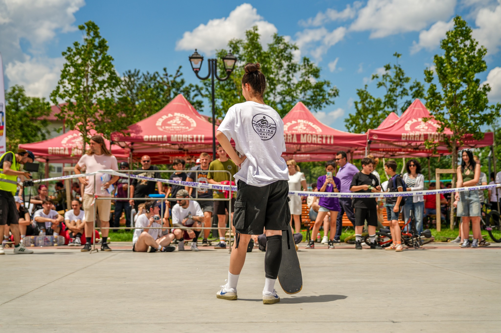

Despre skatepark

Skatepark Slatina este una dintre cele mai importante facilități de skateboarding din România și cel mai mare skatepark din sud‑estul Europei, situat în Baza Sportivă și de Agrement „Dumitru Dobrescu” din municipiul Slatina, județul Olt.
Acest skatepark modern a fost inaugurat oficial la sfârșitul lunii mai 2024, pe locul fostului Ștrand Progresul.
Cu o suprafață de peste 3.600 m², Skatepark Slatina oferă o zonă generoasă pentru skateri de toate nivelurile, incluzând rampe, obstacole, boxuri și alte structuri concepute pentru antrenament și distracție.
Acest spațiu este construit pentru pasionații de skateboard, BMX, trotinete și role, dar și pentru comunitatea locală și tineri care doresc să își petreacă timpul liber într‑un mediu dinamic și sigur.
📍 Locație: Baza Sportivă și de Agrement „Dumitru Dobrescu”, Slatina, județul Olt, România
🕒 Program orientativ: Luni – Duminică: 08:00 – 22:00
📌 Skatepark‑ul este deschis publicului fără taxă, dar respectă programul afișat la intrare și regulile de utilizare.